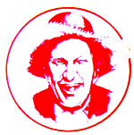

"Time is nature's way of keeping everything from happening at once. "
Well sir, there ain't no season more all-fired blessed than spring. Ev'ry field shows off a diff'rent kind of wildflower, ev'ry treetop shades a brandnew songbird nest, an' ev'ry pasture sports a butter-legged young calf or stilt-walkin' colt. In short, the whole world has got shed of cold weather an' begun burstin' its seams with new growth and energy.
An' it's persackly the fact thet spring is the season of life renewed what made it seem all the stranger when, one day last week, Doc Thromberg drove his Hudson up to the Plumtree Crossin' Gen'ral Store, took hisself a seat on the front porch (where most of th' other members of the local Truth an' Veracity League was givin' theyselves a sunnin' in the still unfamiliar spring warmth), took his stethyscope off'n his neck, peered down at some of terbaccy stains on the porch, an' said-sound-in' solemn as the lead singer at a bullfrog funeral-"I dunno, boys. He jist might be serious 'bout it this time."
Newt Blanchard added a new stainmaker to the floorboards an' replied, "You believe thet, Doc, an' you'd best mail back yer medycal diploma fer a refund. He's done pulled this trick more times'n a possum loose in daylight."
Doc Thromberg didn't say nothin', he jist shook his head in a sorrowful manner.
"Dadburn it, Doc," Newt went on, "I've knowed Ott Bartlett since he were small enough to crawl under a cricket . . . since we rassled each other fer pennies in the elyment'ry schoolyard . . . since before he begun drinkin', even. An' he's cried sick so danged many times in all those years thet he wouldn't know a real illness afore he was cured of it! "
A couple of minutes passed, but Doc didn't lose his hangdog expression.
"Well, all right, then," Newt sputtered, "what d'ya think he's got?"
"A case of plain mule-headed stubbornness," Doc replied. "You know well as I do his mind don't have no reverse gear."
"Spit! He's had thet disease his whole blamed life, an' it ain't nev'r killed him yet," Lafe Higgins remarked.
"It jist might this time," Doc said. "Y'see, after Ott called me over to his place this mornin', I checked his blood pressure, his temp'rature, an' ev'ry dang part of his anatomy. There weren't a blessed thing wrong, so I made the mistake of comin' right out and accusin' him of bein' in good health. Well, Ott got hotter'n a hen eatin' chile peppers and said, 'You old quack! I'll show you who ain't sick . . . I'll die!' "
"Cuss it, Doc," Newt admitted, "this is serious. Boys, we better do somethin'."
Afore long, the fellers had come up with a plan of action. They assembled a grab bag of supplies, drove out to the Bartlett place, an' posted theyselves outside Ott's door. Then Purvis Jacobs and Lafe Higgins strolled inta the sick man's bedroom.
Lafe gave the side of the bed a whack. "Howdy, Ott! " he bellered. 'Heered yer feelin' a wee bit under the weather."
Ol' Man Bartlett jist lay under the covers, lookin' patheticlike in his nightshirt. He didn't hardly turn to greet his visitors.
"Well, Purvis here jist happens to have a jug of his once-a-year, cleanout-the-thumper-keg, spring-special, concentrated corn squeezin's . . . right, Jacobs?" Purvis smiled proudly and -ld up the prized potion. "A swaller of this brew'll cure diswhat ain't even been invented yet."
" Ott didn't move. He lay stiffer'n a statue strick with irse you don't have to have enny," Lafe mut it on the nervous side . . . an' the two men
"I cain't figger it," Newt said. "Thet remedy worked fine when Ott took to the bed back in '58."
The next pair what went in was Skeeter Ridges and one of the Jarvis boys . . . it mighta been Jervis, I ain't sure. At enny rate, the lad looked sheepish as a dog caught with a mouthful of chicken feathers.
"Sorry to hear you're punin'," Skeeter spoke.
Ott nevi budged. If ennything, he seemed to settle a mite deeper inta the mattress.
"Ennyhow," said Skeeter, "the Jarvis boy here brung you a git well card to help speed yer recovery."
The young feller (now thet I think about it, it musta been Jorvis 'stead of Jervis) fumbled with the magazine he'd toted along and finally got it open to the center spread . . . what was a full-length picture of some attractive-though a tad underfed by local standards-young lady what had a staple pokin' through her midsection.
But Ott's expression didn't change.
"I didn't mean no harm," said Jervis (or whoever the heck he was). "Please don't die, Ott."
An' Skeeter an' the Jarvis boy went glumly back outside.
"I don't understand," said Newt. "Thet one worked real well back in '67."
At thet point Newt and Doc Thromberg headed in fer what was like to be the group's last attempt to liven up the listless Mister Bartlett. Whilst Doc busied hisself with takin' Ott's pulse and checkin' to see if the old feller still had eyeballs hidden under them lids, Newt set to talkin'.
"Y'know, Ott," he said, "iffen you kick off now, you'll nev'r collect the ten cents I lost to you playin' checkers back in fourth grade."
Ott nevi so much as twitched a nostril.
"An' you won't git a chance to see if you kin finally beat me in the Barren County hog-callin' contest. O'course, a weaklunged sassyfras-teasippin' bedbody like you wouldn't have much chance o' doin' so, nohow."
They wasn't nary a wiggle in Ott's eyebrows.
"You won't even git to help play tricks on Clovis Roebuck when thet thievin' politicker comes home this summer."
But Ott lay as still and limp as a boned catfish.
"Why, you half-baked invalid, you won't even git to see if you cain't-fist once't-out-lie me, which everybody knows. . ."
" 'Taint no use, Newt," Ott squeaked weakly. "I'm fadin' fast. I kin feel Death's cold hand a-grabbin' at my feet right now. You keep the dime."
Well, thet sounded pretty danged final (especially the part about the ten cents), so Doc Thromberg begun packin' up his medycal bag. "I guess this is it, then," Newt said solemnly. "So long, old-timer." The two men got up and started to take their leave . . . but Newt turned back once't more, put his hand on his childhood friend's shoulder, and whispered, "They's only one more thing I wanta say, Ott . . . I tetched you last! "
With thet, Newt and Doc went out to where the boys was awaitin', lookin' 'bout as cheerful as six days of rain. Back inside, though, Ott had put on a downright unsociable scowl . . . one what was warmin' up faster'n a plugged teakettle.
Next thing the fellers knew, the invalid was bustin' through his front door, screamin', "Thunderation, Newt Blanchard! You ain't never got no last tag on me afore, an' you ain't gonna git one . . . no matter how many times I gotta rise up off'n my deathbed!"
Newt went tearin' down the dirt driveway, while Ott-is bedsheet flappin' like a full clothesline in a gale-chased right behind. They hadn't more'n reached the first bend when Doc Thromberg threw down his black bag and jined in the persuit, hollerin', "Ott Bartlett, you ain't gonna ruin my medycal repytation! You come back here and die like you're s'posed to! "
As you kin imagine, it were with a gen'ral sense of relief thet the rest of the fellers cheered on the rapidly disappearin' Plumtree Crossin' marathon team. After a minute, Purvis Jacobs bit the cob out of the too-long-neglected jug of "Goodbye, Ott" 'shine an' took a slow, thoughtful swaller.
"Ain't nothin' like spring fer endin' winter," he intoned.
An' as the bottle made the rounds, they wasn't a man present what disagreed with him.
"Be not afraid of life. Believe that life, is worth living, and your belief will help create the fact. "
William James
|
 |
|
|